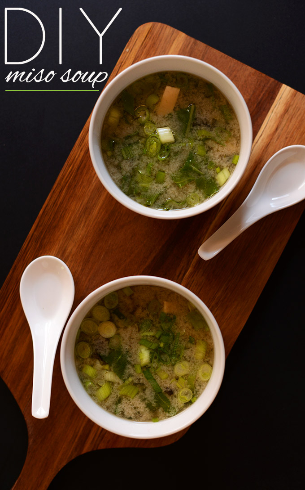

Vegan Miso Soup

What is Miso Soup?
Miso soup is a traditional Japanese soup made primarily of miso paste, dashi (broth), and additional ingredients such as vegetables, seaweed, and tofu.
Ingredients
- 4 cups vegetable broth (use dashi for more traditional miso soup // see notes above)
- 1 sheet nori (dried seaweed // optional // cut into large rectangles // 1 sheet yields 1/4 cup)
- 3-4 Tbsp white or yellow miso paste (fermented soy bean or chickpea paste) with or without bonito (fish flavor, though bonito makes it non vegan-vegetarian-friendly)
- 1/2 cup chopped green chard or other sturdy green
- 1/2 cup chopped green onion
- 1/4 cup firm tofu (cubed // use silken tofu for more traditional miso soup)
Instructions
-
Place vegetable broth in a medium sauce pan and bring to a low simmer.
-
In the meantime, place miso (starting with lesser end of range) into a small bowl, add a little hot water and whisk until smooth. This will ensure it doesn’t clump when added to the soup later. Set aside.
-
To the broth add chard (or other greens of choice), green onion, and tofu (if using silken, add at the end of cooking) and cook for 5 minutes. Then add nori and stir. Remove from heat, add miso mixture, and stir to combine.
-
Taste and add more miso or a pinch of sea salt if desired. Serve warm. Best when fresh.